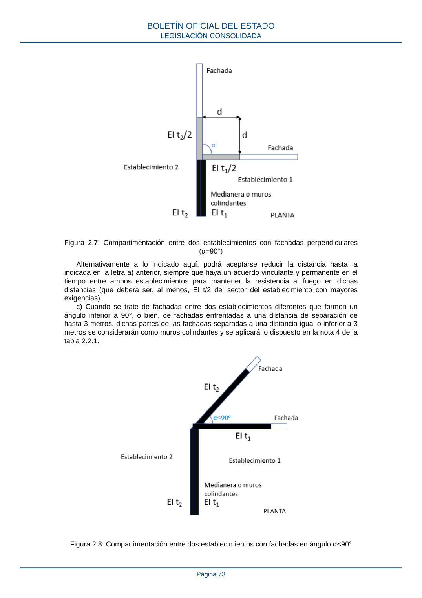

RSCIEI · Página 73 · versión 2025-04-10
SHA256: 85aa0af25d51e5b58d8975a4eefbf76d3f57a8933445cfe814ae9c4818a2e3e7 · página física 73 de 108 · métodos de encabezado
solo si están cotejados.
Formatos: Markdown · JSON de bloques · PDF p. 73 · imagen PNG
Figura 2.7: Compartimentación entre dos establecimientos con fachadas perpendiculares (α=90°) Alternativamente a lo indicado aquí, podrá aceptarse reducir la distancia hasta la indicada en la letra a) anterior, siempre que haya un acuerdo vinculante y permanente en el tiempo entre ambos establecimientos para mantener la resistencia al fuego en dichas distancias (que deberá ser, al menos, EI t/2 del sector del establecimiento con mayores exigencias). c) Cuando se trate de fachadas entre dos establecimientos diferentes que formen un ángulo inferior a 90°, o bien, de fachadas enfrentadas a una distancia de separación de hasta 3 metros, dichas partes de las fachadas separadas a una distancia igual o inferior a 3 metros se considerarán como muros colindantes y se aplicará lo dispuesto en la nota 4 de la tabla 2.2.1. Figura 2.8: Compartimentación entre dos establecimientos con fachadas en ángulo α<90° BOLETÍN OFICIAL DEL ESTADO LEGISLACIÓN CONSOLIDADA Página 73
